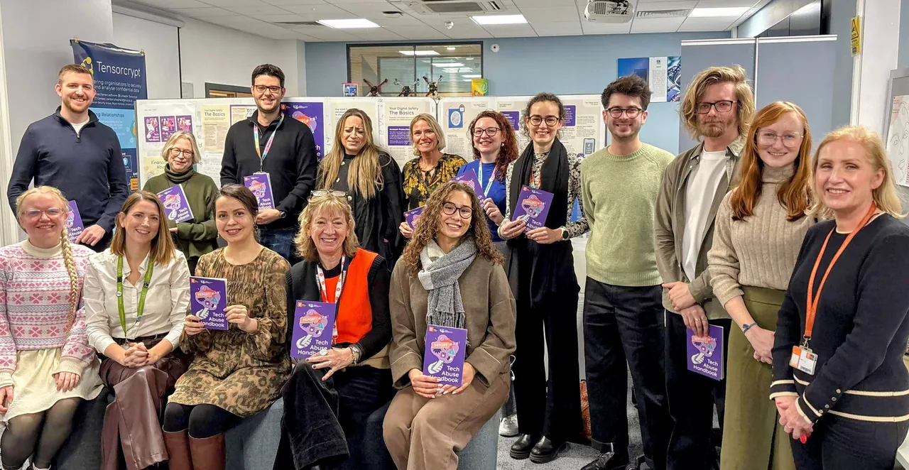

Free to download
Tech Abuse Handbook
A guide to digital safety for victims and survivors of technology-facilitated domestic abuse.
Explore the HandbookTechnology, while convenient, is increasingly exploited by perpetrators to cause harm in relationships. Informed by real-world cases and our work with frontline support services, we translate security research into practical resources that empower victims and survivors of domestic abuse, and those who support them.
We are researchers based in the Information Security Group (ISG) (opens in a new tab) and the Usable Security and Privacy (USP) Lab (opens in a new tab) at Royal Holloway, University of London (opens in a new tab).
TechAbuse-Research [at] rhul [dot] ac [dot] uk
Need to leave this site quickly? Use Quick exit at the top of the page. It does not clear your browsing history.

Free to download
A guide to digital safety for victims and survivors of technology-facilitated domestic abuse.
Explore the HandbookAvailable on request
A structured set of checklists to help identify and safely respond to technology-facilitated abuse, designed for caseworkers supporting survivors of domestic abuse.
Explore the ChecklistsWe are grateful to everyone who has helped develop our resources: all members of the USP Lab for their feedback; our partners at the Surrey Domestic Abuse Partnership (SDAP) (opens in a new tab) for their collaboration and frontline expertise; the volunteers who translated the handbook; SafeLives (opens in a new tab) and the United Nations Population Fund (UNFPA) (opens in a new tab) for their expert feedback on the checklists; Tech against Violence (opens in a new tab) for their collaboration on the Swiss edition; and Studio Noon (opens in a new tab) for their design work.
Free to download
Some tech abuse is obvious, but other forms are subtle, hidden in app settings and invisible connections. The Tech Abuse Handbook helps you take back control: each chapter gives risk examples, explains how to protect yourself and points to additional resources.
The handbook currently exists for the UK and Switzerland, in several languages.
Both layouts have the same content; only the page design differs.
United Kingdom
The UK edition was created by the Information Security Group (ISG) at Royal Holloway, University of London (RHUL), in collaboration with the Surrey Domestic Abuse Partnership (SDAP).
Translations of the UK edition are produced in the mobile layout.
The handbook was created in 2025 as part of a project funded by the Economic and Social Research Council via the Social Science Impact Accelerator programme at Royal Holloway.
The copyright in this handbook belongs to Royal Holloway and Bedford New College, and it can be used under the Creative Commons CC BY-NC-ND license. If you wish to modify this handbook or use it for commercial purposes, please get in touch with TechAbuse-Research [at] rhul [dot] ac [dot] uk to discuss the terms of a license.
Organisations that would like to print copies of the handbook can request print-ready files from the research team.
Email us to request print files for the UK editionSwitzerland
The Swiss edition was developed by the Information Security Group (ISG) at Royal Holloway, University of London (RHUL), in collaboration with the Public Discourse Foundation (opens in a new tab) and Tech against Violence (opens in a new tab).
The Swiss edition was made possible through the financial support of Soroptimist International Switzerland, the Federal Office for Gender Equality, the Canton of Geneva, and the Fondation pour l’égalité de genre.
The copyright in this handbook belongs to Royal Holloway and Bedford New College, and it can be used under the Creative Commons CC BY-NC-ND license. If you wish to modify this handbook or use it for commercial purposes, please get in touch with TechAbuse-Research [at] rhul [dot] ac [dot] uk to discuss the terms of a license.
Organisations that would like to print copies of the Swiss edition can request print-ready files from the research team.
Email us to request print files for the Swiss editionAvailable on request
Designed for caseworkers supporting survivors of domestic abuse, the Tech Abuse Checklists help identify and safely respond to many aspects of tech abuse.
In particular, caseworkers can use them when a survivor reports abusive behaviour involving technology, when there are digital behaviours the survivor cannot explain fully, or when a general domestic abuse risk checklist (e.g., DASH) reveals risks of tech abuse.
The checklists are structured to guide caseworkers through a clear process:
Part 1: Initial Screening Checklist
Screen for different types of tech abuse.
Part 2: Specialised Tech Abuse Checklists
Identify instances and explore specific types of tech abuse in more detail.
Part 3: Risk Indicators and Summary
Helps to determine escalation risks and summarise the survivor’s individual situation.
Part 4: Action Plan and Signposting
Provides practical, tailored steps to establish safety protocols, document the abuse, and refer the survivor to specialist support.
For organisations and researchers who would like to use the checklists.
This form prepares an email to the research team. Nothing is sent from this website: your email app opens a draft for you to review and send.
We’ve asked your device to open a draft email addressed to . Please check the draft and press Send in your email app.
If no email app opened, copy your request below and send it from any email account.
Prefer to write your own email? Send your request to TechAbuse-Research [at] rhul [dot] ac [dot] uk, including your name, organisation and how you plan to use the checklists.
The checklists were created in 2026 by the Information Security Group (ISG) at Royal Holloway, University of London (RHUL) in collaboration with the Surrey Domestic Abuse Partnership (SDAP), as part of a project which was funded by Research England via the Participatory Research Fund (PRF) programme at Royal Holloway. This version has received extensive expert feedback from SafeLives and the United Nations Population Fund (UNFPA).
The copyright in these checklists belongs to Royal Holloway and Bedford New College, and they can be used under the Creative Commons CC BY-NC-ND license. If you wish to modify these checklists or use them for commercial purposes, please get in touch with TechAbuse-Research [at] rhul [dot] ac [dot] uk to discuss the terms of a license.